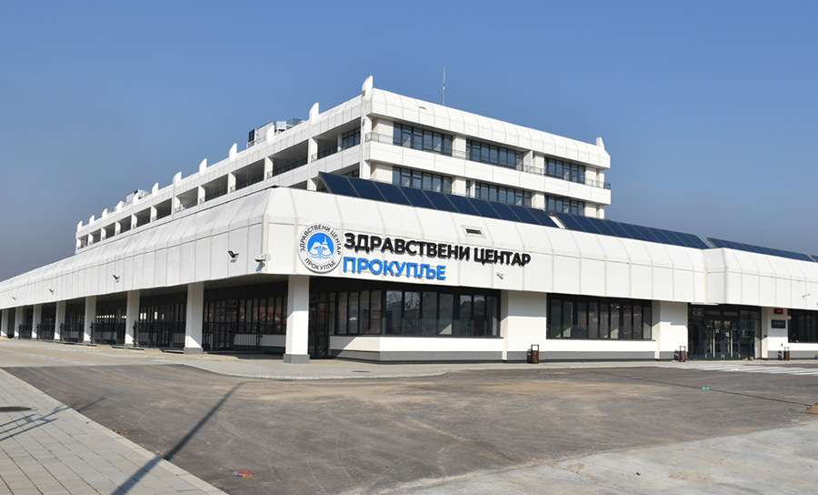
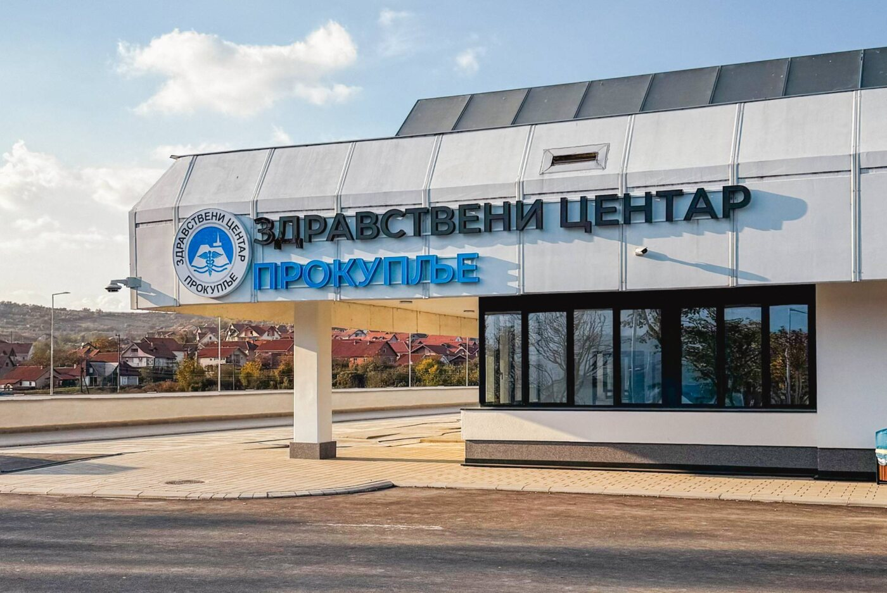

IP telephony
A new Alcatel-Lucent OXO Connect IP telephone exchange for the facility's internal and external communication.

A new IP telephone exchange, highly reliable active network infrastructure and complete Wi-Fi coverage for a healthcare facility where system stability and availability are essential.

Prokuplje Health Centre needed a new IP telephone exchange, a highly reliable, high-throughput active network managed through a single software platform, and full Wi-Fi coverage of the building.
TRS delivered the facility's complete telephony, network and wireless infrastructure, designed for an environment where systems have to be available without interruption, 24 hours a day.
The complete communication infrastructure was delivered on Alcatel-Lucent Enterprise equipment as a single whole.
A new Alcatel-Lucent OXO Connect IP telephone exchange for the facility's internal and external communication.
Six OS6900 core switches, more than 80 OS6560 series access switches and industrial OS6465H switches, under a single management platform.
Around 100 OAW-AP13xx series access points for full wireless coverage of every area of the facility.
Telephony, network and Wi-Fi were implemented as a single infrastructure for the facility.

The implemented solution provides reliable telephony, a stable centrally managed network and full Wi-Fi coverage, giving the facility a communication foundation ready for daily operations and the further development of its services.